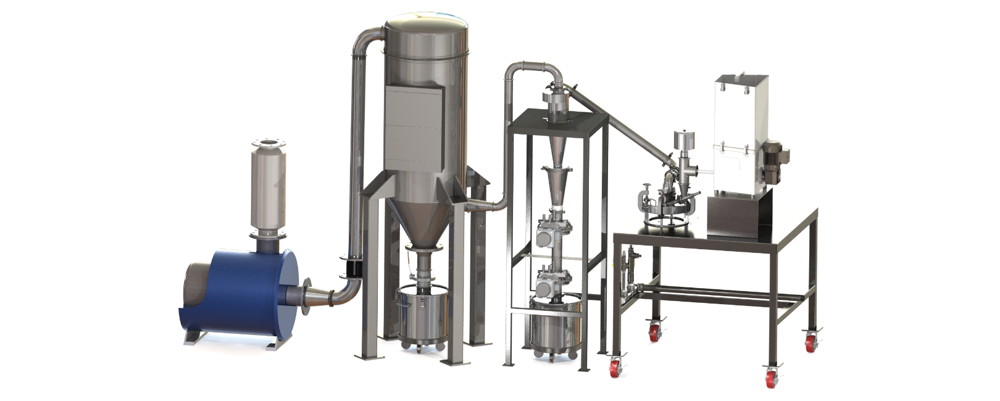

Next Level in Fine Grinding Efficiency and Productivity
Unsurpassed Quality and Productivity in Ultra-Fine (0.5 – 45 Micron) Grinding Applications The MICRO-JET System delivers unsurpassed efficiency and effectiveness in the ultra-fine grinding and classification of a wide range and variety of materials. Each system is custom-engineered to meet a broad range of grinding applications. The design of the Micro-Jet jet mill makes operation simple and keeps production costs down. Systems are engineered for laboratory, pilot and full-scale production from 1 to 10,000 lb/hr.
Exceptional Fine Grinding
The MICRO-JET operates within a very narrow, adjustable range to provide 0.5 to 45 micron average finished product sizes.
Improved Grinding Efficiency
The air flow rate, air pressure and grinding pattern are easily adjusted by means of interchangeable grinding nozzles and liners. Individual MICRO-JET systems may be tailored to optimize both the desired particle size and the production rate.
No Mechanical Heat
As with our other fluid energy jet mills, the MICRO-JET milling machine may be used to grind heat-sensitive products with critical heat limitations. The cooling effect created by the expanding gases offsets the slight heat generated during the grinding and classifying processes.
Replaceable Liners for Enhanced Performance
Abrasive, sticky and contamination-sensitive products can all be processed by means of specialized MICRO-JET liners. Liners are available in alumina ceramic, tungsten carbide, silicon carbide, zirconia, PTFE, polyurethane, and others.
Simple Clean-up and Changeover
For batch runs and production that requires cleaning between runs, the MICRO-JET jet milling machine allows fast access to all product contact surfaces. The MICRO-JET is engineered for rapid disassembly without special tools.
Combined Operations
In the MICRO-JET system, grinding may be combined with other physical and chemical operations. This saves time, reduces energy and minimizes product handling. While grinding, the MICRO-JET can:
- blending and grinding
- coating and grinding
- chemical addition
- Reduced Production Costs
The Micro-Jet jet mill is engineered to provide maximum flexibility and production efficiency. Our application expertise enables us to provide the optimum systems for individual customer requirements.
Reliable Construction
The MICRO-JET system is constructed entirely in the USA of only the highest quality components. The low-maintenance design has no moving parts and can be opened quickly and easily for inspection or cleaning. All parts are made in the USA which guarantees rapid delivery of spare items. Comprehensive engineering and durable construction enable our system to operate continuously 24 hours a day, 365 days a year.
Engineering Support and Service
MICRO-JET mill testing is done at our facility in Pennsylvania where detailed process data can be obtained for your application. Fluid Energy engineers and quality service technicians are immediately available to provide technical assistance and to guarantee that the MICRO-JET System performs to your complete satisfaction.
Rental Systems
Most of Fluid Energy’s advanced jet mill systems are available on a rental basis to fulfill your immediate processing requirements.
Custom Processing
Fluid Energy maintains a facility for fine / ultra fine grinding of your material on a contractual basis. Other services include blending, drying and packaging. Our fully equipped QA laboratories are available for moisture, particle size and custom analyses of your products.
Efficient design and dependable operation
The MICRO-JET milling machine grinds and classifies in a single, variable cylindrical chamber. High-pressure air, gas or steam is introduced through specially designed nozzles, converting the potential energy of the compressed gas into a grinding stream of sonic or supersonic velocity. This elastic fluid creates a high-velocity helix that rotates around the center of the jet mill.
Raw materials are introduced into the grinding chamber through a venturi feed injector. The solid particles are entrained in the turbulent helical flow, causing them to collide. These high-velocity collisions pulverize the solids into micron and submicron particles. The particles stratify and grind each other in direct relation to their inertia. As the particles are reduced to the desired size, the viscous drag of the exhaust draws only the reduced particles into the discharge stream.

Typical Operating Parameters - Air
| Mill Series |
Production Capacity(lbs/hr) |
Production Capacity(kgs/hr) |
SCFM 70° F @100 PSIG |
Steam @70° F& 200 PSIG |
| 000101 |
0.1 - 20.5 - 20 |
0.05 - 1.00.25 - 9.0 |
4.010 - 30 |
N/A60 - 120 |
| 02020304 |
1 - 10050 - 750 |
0.5 - 4525 - 340 |
50 - 120100 - 500 |
200 - 500400 - 1,000 |
| 04050506 |
100 - 1,500200 - 2,500 |
45 - 68090 - 1,135 |
400 - 800450 - 1,200 |
1,000 - 2,0001,500 - 2,500 |
| 06080808 |
400 - 3,500500 - 9,000 |
180 - 1,590225 - 4,100 |
750 - 1,5001,000 - 2,000 |
3,000 - 5,0004,000 - 6,500 |
| 11121314 |
800 - 12,0001,200 - 18,000 |
225 - 4,535365 - 5,445 |
2,000 - 4,0003,000 - 6,000 |
6,000 - 15,0008,000 - 22,000 |
Micro-Jet Applications
The Micro-Jet is ideal for a wide range of ultra-fine to fine powder grinding and classification applications including:
- Hard, Abrasive Materials: Minerals, Rare Earth Alloys
- Heat Sensitive Materials: Pigments, Toners
- Sanitary, Sterile Applications: Pharmaceuticals, Foods, Cosmetics
- Agricultural Materials: Fungicides, Herbicides, Pesticides
- Volatile Materials: Propellants, Explosives, Oxidizers
- Synthetic Materials: Polymers, Plastics, Precipitates